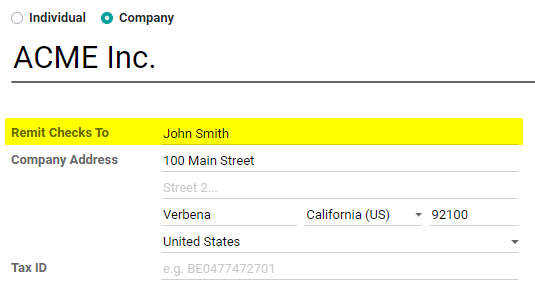
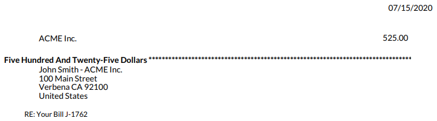

Note: This App is also compatible with Odoo Online
Note: - This app may require changes for your particular organization. It has only been tested in databases created with the Country setting of the United States and may need to be localized for other countries. Discuss your requirements with your Odoo Advisor or an Odoo Partner to understand the best way to leverage this kind of functionality.
Specify who to Remit the Check to
Make sure payments reach the correct destination
New Field on Contact
Record a name or department the payment should be directed to

Check layout modified
Remit to added prior to and on the same line as the Company Name
